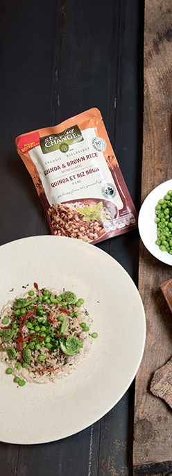

Recipes
WE’VE PARTNERED WITH
JAMIE
KENNEDY!
We’ve partnered with celebrity chef and farmer, Jamie Kennedy, to show you how to get the most out of local produce all season long. See the recipes from the first harvest of the year below and join us on Facebook to learn more about enjoying healthy, sustainable cooking and agricultural practices!
Quinoa and Brown Rice with Spring Vegetables and Oyster Mushroom Duxelles. A versatile, satisfying, vegetarian dish

Ingredients:
- 1 package (240 g) Seeds of Change® Quinoa & Brown Rice
For Duxelles:
- 100g fresh oyster Mushrooms, finely chopped
- 100g (6) fresh white Mushrooms, finely chopped
- 1 shallot, finely chopped
- 500 mL (2 cups) off dry Ontario Riesling or vegetable stock
For Duxelles:
- 250 mL (1 cup) 35% whipping cream
- Salt and pepper to taste
- 15 mL (1 Tbsp.) sundried tomatoes, cut in julienne
- 125 mL (1/2 cup) green peas, blanched in boiling water for 2 minutes and drained
- 50 mL (1/4 cup) fiddleheads blanched in boiling water for 5 minutes and drained
- 10 mL (2 tsp.) chopped parsley
Later in the summer, try substituting fiddleheads and peas with local green and yellow beans. For those not wishing to include wine in this dish, substituting wine with vegetable stock produces excellent results as well.
method:
- Place the mushrooms, the shallot and the wine or stock into a stainless steel pot
- Gently simmer, stirring from time to time, until most of the liquid has evaporated
- Add the cream and continue to simmer for 5 minutes. Season with salt and pepper. Remove from heat
- In another pot, add the contents of Seeds of Change® Quinoa & Brown Rice and 50 mL (1/4 cup) cup water. Put on a lid and place on low heat to simmer.
- While rice and quinoa are heating up, warm two dinner plates
PRESENTATION:
- Warm the mushrooms duxelles and divide onto the two plates, forming a round layer approximately 4" in diameter on the centre of each plate
- Divide the warmed rice and quinoa carefully onto the duxelles mushrooms on each plate
- Garnish each plate with the fiddleheads, peas and julienne sundried tomatoes. Serve!